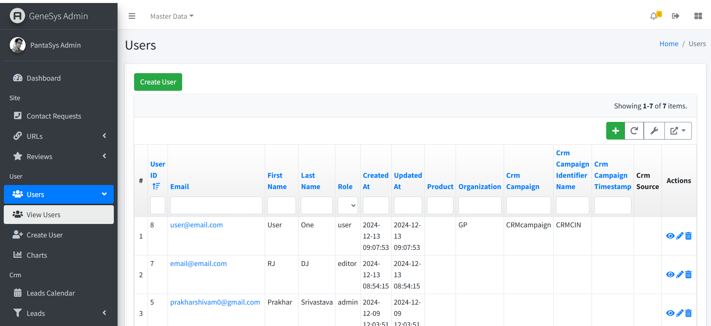
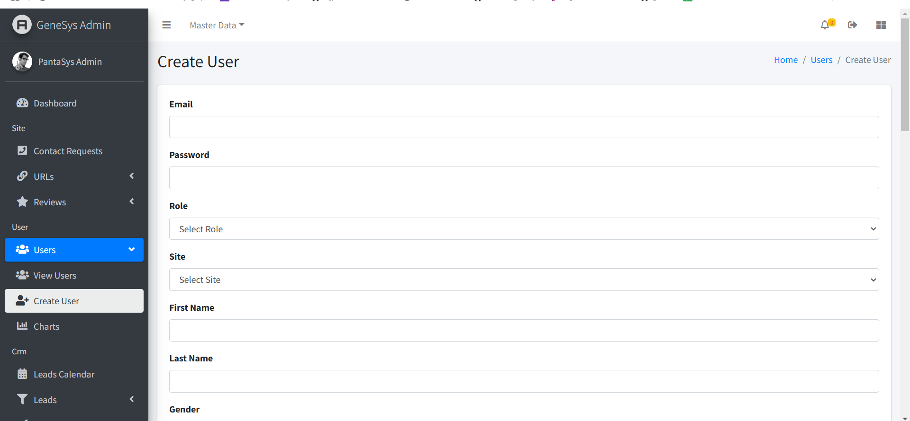

Users
The "Users" module focuses on account management, enabling administrators to control access, assign roles, and maintain user details.
The Users section focuses on user account management. Administrators can:
Create User: Add new users with specific roles.
View Users: Display a list of users in a table format.
Update User: Modify user details and roles.
Delete User: Remove users from the system.
The “Users” module focuses on user account management, empowering administrators to control access, assign roles, and maintain user details. Refer to the Users section for detailed instructions on managing users.
Viewing Users
{kind=link}
The View Users page displays all saved users in a table format. The table includes the following columns:
Managing Users
Create a User
Navigate to the View Users page.
Click the Create User button.
Fill in the required fields and click Save.
View a User
Navigate to the View Users page.
Users are displayed in a table format with all relevant details.
Update a User
On the View Users page, locate the user you want to modify.
Click the Edit button in the Actions column.
Make the necessary changes and click Save.
Delete a User
On the View Users page, locate the user you want to delete.
Click the Delete button in the Actions column.
Confirm the deletion to remove the user permanently.
User Table Columns
{kind=link}
User ID: - An auto-generated unique identifier assigned to each user. - This column helps to differentiate between users easily.
Email: - The email address of the user. - This column allows users to view and verify contact information.
First Name: - The first name of the user. - This field provides clarity on the user’s identity.
Last Name: - The last name of the user. - Together with the first name, it fully identifies the user.
Role: - The user’s role in the system (e.g., Admin, Manager, Staff). - Helps assign appropriate permissions and responsibilities.
Created At: - The date and time when the user account was created. - Useful for tracking new accounts.
Updated At: - The date and time when the user account was last updated. - Useful for identifying recent changes.
Product: - The product or service associated with the user. - Useful for linking users to specific offerings.
Organization: - The organization the user is associated with. - Provides context on the user’s professional background.
CRM Campaign: - A text column containing the name or type of CRM campaign linked to the user. - Helps connect users to specific campaigns.
CRM Campaign Identifier: - A unique identifier for the CRM campaign. - Enables precise tracking of campaign associations.
CRM Campaign Timestamp: - The date and time related to the CRM campaign activity. - Useful for campaign timeline tracking.
CRM Source: - Indicates the origin of the CRM campaign (e.g., “Website,” “Referral”). - Helps track campaign sources.
Action: - This column contains interactive icons for various actions:
View Icon: Opens a detailed view of the user.
Delete Icon: Removes the user from the system.
Update Icon: Opens the user form for editing.